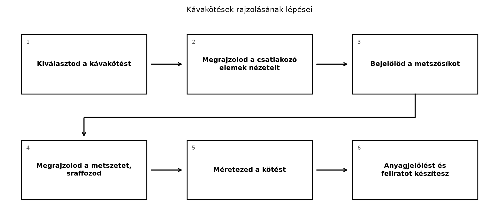

A fiók sarkát rajzolod: az előlap és az oldallap találkozása. A műhelyben látod, hogy a két deszka „egymásba harap”, a rajzon viszont nézeteket és metszeteket kell választanod. Ha rosszul jelölöd a takarást vagy a horonymélységet, a gyártásban a fiók nem illeszkedik, vagy a fogazás elöl kilátszik. Ebben az alfejezetben a kávakötések – beeresztések, fogazások, idegencsapos és ékelt kötések – szabványos rajzi ábrázolását tanulod meg.
A kávakötések rajzolása mindig ugyanazt a logikai sort követi: először döntsd el, melyik elem takar, melyik látszik, és hol lesz metszet. Az alábbi folyamatábra segít, hogy ne hagyj ki lépést.

Definíció. A kávakötés két egymásra merőleges, széles deszka – káva – élével vagy lapjával történő összekapcsolása. A deszka széles oldala a lapja, keskeny oldala az éle. A kávakötés erős sarkot ad, és vetemedés ellen is fogja a táblát.
Definíció. A beeresztés olyan kávakötés, amelynél az egyik elem végét a másik elembe mart horonyba (nútba) toljuk. A horony mélysége a befogadó elem vastagságának kb. egyharmada (18 mm-es oldalnál kb. 6 mm; tájékoztató, ellenőrizendő: szakkönyv), mert a mélyebb horony gyengíti az oldalt. A horony szélessége a beeresztett elem vastagságához igazodik. A beeresztés lehet átmenő vagy takart (vak): ez a horony hosszirányú kifutására vonatkozik, nem a mélységére.
Definíció. A fogazás a két kávaelem végén kialakított, egymásba nyúló csapok és fészkek váltakozó sora. A fiókoknál az egyik elemen a fecskefarkak, a másikon a csapok vannak. A fogazás lehet egyenes (derékszögű fogak) vagy fecskefarkú (trapéz alakú fogak). A fecskefarkú fogazás geometriai zárása miatt széthúzás ellen is tart; az egyenes fogazás főként ragasztással dolgozik.
Szabály. A rajzon a nyílt fogazás azt jelenti, hogy a fogak a kötés mindkét külső oldalán látszanak. A félig takart fogazás azt jelenti, hogy az egyik oldalról – fiókoknál jellemzően az előlap felől – a fogak nem látszanak, mert a fogak nem érnek át a deszka teljes vastagságán. A metszeten ilyenkor a takart él mögött látható a fogak és a fészkek kiosztása. A rejtett éleket a rajzon szaggatott vonallal jelölhetjük, ha az egyértelműség igényli.
A polc–oldal kapcsolatot leggyakrabban metszetben rajzoljuk. A polc éle beül az oldallap belső lapjába mart horonyba.
Átmenő beeresztésnél a horony az oldallap teljes szélességén végigfut, ezért az oldal elülső élén látszik; a polc vége is látszik az élen. A rajzon a hornyot az oldal elölnézetén is jelölni kell.
Takart (vak) beeresztésnél a horony az elülső él előtt kb. 10–20 mm-rel megáll (az ábrán 15 mm), a polc elején ennek megfelelő kivágással (vállal). Így elölről a kötés nem látszik. A metszeten a horony alja és a polc vége az oldal anyagán belül végződik, a horony mélysége mindkét esetben kb. 6 mm (18 mm-es oldalnál).
Egyenes beeresztésnél a polc vége egyenes, a horony keresztmetszete téglalap. Fecskefarkú beeresztésnél a horony trapéz keresztmetszetű: a polc vége is trapéz alakúra munkált. A fecskefarkú beeresztés a polcot húzás ellen is zárja, ezért alkalmazzuk ott, ahol a polcra húzó erő hat.
A rajzon mindig adj meg: - a polc vastagságát, - a horony szélességét és mélységét, - a horony helyét az oldal éléhez képest, - metszeten a sraffozást, anyagjelöléssel.
A HTML-változatban a fogazás típusa (nyílt / félig takart / egyenes) és a fecskefarok hajlása (1:5…1:8) állítható; a fogkiosztás és a szög () élőben változik.
A fiókok sarkán a fogazás a leggyakoribb kávakötés. A rajzolás során két kérdést kell tisztázni:
A nyílt fecskefarkú fogazás rajzán az előlap elölnézetén a fecskefarkak sorakoznak, a hornyok sötét sraffozással vagy a fogak kontúrjával. A metszeten a fogak és a hozzájuk tartozó csapok illeszkedése látszik.
A félig takart fecskefarkú fogazás rajzán az előlap külső nézetén nincs fogkontúr; a belső oldali fogakat rejtett élként, szaggatott vonallal jelölhetjük. A legbiztosabb ábrázolás a metszet: az előlap anyagában látjuk a fészkeket, amelyekbe az oldallapok fecskefarkai érkeznek. A fészkek alja előtt – az előlap külső lapjánál – takaró anyagréteg marad, például 6 mm. Ezt a takarást a metszeten méretezzük.
Egyenes fogazásnál a fogak derékszögűek, ezért a nézeteken szabályos téglalapok, a metszeten négyszögletes csapok és fészkek látszanak. Ez a kötés gyengébb húzásra, ezért fióknál ritkább, díszdobozoknál és ládáknál gyakori.
Fecskefarok-szög. A fecskefarkak hajlásszöge a gyakorlatban keményfához kisebb, puhafához nagyobb. Tájékoztató arány: puhafánál körülbelül , azaz ; keményfánál , azaz körülbelül . Egyes bútortörténeti rajzok közötti szöget is mutatnak. A szög pontos értéke rajztól és fafajtól függ, ezért tájékoztató értékként kezeld (ellenőrizendő: a választott fafajnak és ragasztásnak megfelelő gyakorlat).
A három fogazás elölnézetét, oldalnézetét és vízszintes metszetét a beeresztések ábrájának (b) része mutatja (fent): az előlapról nézve a félig takart fogazás nem látszik, oldalról a fecskefarkak és a csapok láthatók.
Az idegen csap különálló, nem a kötendő deszkából kialakított kapcsoló elem. A rajzon az idegen csapot mindig pontosan méretezett furattal együtt ábrázold.
Köldökcsap (tipli) – hengeres facsap. A rajzon a furatokat a két elemen egymással szemben jelöljük; a furat mélysége a köldökcsap hosszának fele, bár a rajzon jellemzően csak a furat átmérőjét és mélységét adjuk meg. A metszeten a hengeres csap körvonala látszik, a furat alján kis légrés is hagyható; ezt a rajzon vonalkákkal jelölhetjük.
Lamelló (laposcsap) – ovális, préselt bükkfa lapocska. A rajzon az ovális fészek látszik, a lamelló keresztmetszete a metszeten keskeny téglalap vagy ovális. A fészek szélessége és hossza gyártói táblázatból adódik, ezért a rajzon a lamellószámot – például 20-as lamelló – és a fészek középvonalát tüntessük fel.
Szakállas vésett csap – a hazai szakrajzi gyakorlatban a csap szélességének a külső széle felé eső, rövidebb kiegészítő része (a szakáll), amely a horonyba illeszkedik (ellenőrizendő: szakrajzi tankönyv, és az Keretkötések ábrázolása: sarok-, T- és keresztkötések aljazás-definíciójával egyeztetve). Kávakötéseknél ritka. A rajzon a szakáll méretét is megadjuk (pl. csapszélesség 40 mm, szakáll 10 mm széles és 8 mm hosszú); az ábra (c) része a szakáll alakját sematikusan mutatja.
Ékelt kávakötés – a csap átmegy a másik elemen, és a csap végébe fűrészelt résekbe vert ékek a csapot a fészek kissé tágított (kifelé szélesedő) szájában szétfeszítik, így a kötés nem húzható szét. Az ékeket a csap tengelyével párhuzamosan verjük be; a csap bütüjén az ékek vonalai a csap hossztengelyével párhuzamosak, az ék a csapot a húzásra merőlegesen feszíti szét.
Az ábrán a kötőelemek szürkék, a furat és a fészek vonala vékony, a takart él szaggatott; a hosszmetszetben a faanyagot rostvonalak jelölik.
A fiók az egyik legjobb gyakorló rajz, mert egyszerre tartalmaz beeresztést, fogazást és horonymarást. A teljes fiókszerkezethez rajzold meg:
A fiók elemeit anyagjegyzékkel is kiegészítheted, ahogy a Szabásjegyzék és anyagnorma alfejezet mutatja. A rajzon minden elemet jelölj meg: előlap, oldallap, hátlap, fiókfenék, fiókfogantyú, fiókvezető. A fogazásnál a félig takart megoldást gyakorold: az előlap külső nézete tömör, a belső és a metszet mutatja a fogakat.
Továbbvitt eredmény. A fiókszerkezet rajzát és a félig takart fogazás rajzi szabályait használjuk az Egyenes és fecskefarkú fogazás kézzel és géppel alfejezetben, amikor a kötést elkészítjük, és a Fiókok és szekrényajtók szerkezete; fiókos éjjeliszekrény szerkezeti rajza alfejezetben, amikor a fiókot beépítjük. Az egyszerű tömörfa bútor rajzának olvasásához is szükséges, lásd Egyszerű tömörfa bútorok szerkezeti rajza.
A HTML-változatban az alkatrészek rétegenként ki-be kapcsolhatók, és a tételszámra mutatva a darabjegyzék sora kiemelődik.
Adott: fiókelő 400 mm × 140 mm × 18 mm, tölgy; oldallap 500 mm × 140 mm × 12 mm, tölgy. A kötés félig takart fecskefarkú fogazás. A fecskefarkak az oldallapokon vannak, a csapok és a félig takart fészkek a fiókelőn. A fészekmélység 12 mm (az oldallap vastagságával egyező), az előlap külső oldalán 6 mm takaró réteg marad: mm. A fecskefarok hajlása 1:6 (, tájékoztató).
Tájékoztató kiosztás (ellenőrizendő: a 140 mm-es magasság mentén): 4 fecskefarok, a legszélesebb helyükön 22 mm széles, a szélső csapok kb. 14 mm-esek: mm.
Rajzfeladat. Készítsd el a csomóponti rajzot.
Megoldás rajzban.
1. A fiókelő elölnézete: rajzolj egy 400 mm × 140 mm-es
téglalapot. A külső oldalról ne rajzolj fogkontúrt. A
fogazás rejtett éleit szaggatott vékony vonallal jelezheted a lap alsó
és felső harmadában, ha szükséges.
2. A fiókelő belső nézete: rajzold meg a 18 mm vastag
deszkát, és a belső lap szélén jelölj 4 db fecskefarkú fészket; a
fészkek közötti anyagrész a csap. A fogazás a 140 mm-es magasság mentén
fut (nem a 400 mm-es szélességben). A fészkek mélysége a lap szélétől
befelé 12 mm.
3. A metszet: vízszintes A–A metszet a fiók sarkán, egy
fecskefarok magasságában. A metszeten a fiókelő 18 mm vastagságában a
fészek 12 mm mélyen látszik, a külső oldal felé 6 mm takaró
réteg marad; az oldallap fecskefarka a fészekben ül. A
sraffozás a tölgy anyagot jelöli, a fészkek üregeit nem
sraffozzuk.
4. Méretezés: add meg a fiókelő vastagságát 18 mm, az
oldallap vastagságát 12 mm, a takaró réteget 6 mm, a fészekmélységet 12
mm, a fecskefarok szélességét 22 mm és a hajlást 1:6 (tájékoztató). A
méreteket mm-ben, mértékegység kiírása nélkül tüntesd fel.
5. Anyagjelölés: a metszethez adj anyagjelölést,
például „tölgy, húrmetszet” felirattal.
Továbbvitt eredmény. Ez a rajz közvetlenül előkészíti a műhelybeli fogazás készítését, mert a belső nézetről a fecskefarkú fészkeket átmásolhatod az alkatrészre, a metszet pedig a takarást mutatja.
Ellenőrizd, hogy: - a nézet és metszet összhangban van: ami a metszeten látszik, az a nézeten rejtett élként jelenik-e meg; - a takart fogazásnál az elölnézeten nincs fogkontúr, a metszeten pedig a takaró réteg vastagsága szerepel; - a beeresztésnél a horonymélység és a felirat (átmenő/takart) egyezik, és a méretek a valósnak megfelelnek; - a fecskefarok-szög tájékoztató arányát a rajzon jelölted (például 10° vagy 1:6), és a fogak trapéz iránya a húzás ellen dolgozik; - az idegen csapot furatával együtt méretezted, nemcsak a csapot rajzoltad meg; - a metszetsraffozás szabványos, a levegőt nem sraffoztad.
Hiba: A félig takart fogazást úgy rajzolod, hogy az
elölnézeten is fogak látszanak.
Ok: a takarás fogalmának félreértése.
Helyes: az elölnézet tömör marad, a fogakat csak a
belső nézeten és a metszeten mutatod.
Hiba: A polc–oldal beeresztésnél a horonymélységet
az oldal teljes vastagságára (18 mm) méretezed.
Ok: az átmenő/takart (hosszirányú kifutás) és a mélység
összekeverése. Helyes: a mélység kb. az oldalvastagság
egyharmada (18 mm-nél kb. 6 mm); a takartságot a horony elülső él előtti
megállása adja; a rajz méretének és a feliratnak egyeznie kell.
Hiba: A fecskefarkú fogazásnál a hajlásszöget 25°-ra
rajzolod.
Ok: túl nagy szög, ami a gyakorlatban vékony, könnyen
kitörő fecskefarok-csúcsokat ad. Helyes: tájékoztató
jelleggel 7°–14° közötti szög, keményfánál kisebb, puhafánál nagyobb
(ellenőrizendő: gyakorlati arány).
Hiba: A fiókszerkezet rajzáról hiányzik a fiókfenék
hornya.
Ok: a teljes fiók rajzán csak a sarkokra koncentrálnak.
Helyes: az oldallapok belső oldalán a horony helyét,
szélességét és mélységét metszetben vagy csomóponti rajzon mindig
jelöld.
Egy asztalostanuló a vizsgaremekhez fiókos éjjeliszekrényt rajzolt. A fiók sarkát félig takart fecskefarkúnak szánta, de a rajzon az elölnézetre is rárajzolta a fogakat. A műhelyben a mester ennek alapján nyílt fogazást készített, mert a rajzból az derült ki. A fiók elölről mutatta a fogazást, ami nem illett a letisztult bútor stílusához. A javítás során az előlapot újra kellett gyártani. A tanulság: a rajznak pontosan kell mutatnia, mi takart és mi látszik. A takarást metszettel és egyértelmű felirattal kell rögzíteni.
Válaszolj röviden, majd nézd meg a Megoldások elejét!
1. feladat (A)
Definiáld a kávakötést, és sorolj fel legalább négy fajtáját.
2. feladat (A)
Rajzold le szövegesen a takart polc–oldal beeresztést 18 mm-es
oldallappal. Add meg a horony mélységét, és jelöld, hol áll meg a
horony.
3. feladat (B)
Egy fiók előlap 18 mm vastag, az oldallap 12 mm vastag. A fogazás félig
takart fecskefarkú, a takaró réteg 6 mm. Írd le, mit látunk az
elölnézeten, a belső nézeten és az A–A metszeten.
4. feladat (B)
Számítsd át a
arányú fecskefarok-szöget, és hasonlítsd össze az
aránnyal. Melyik fafajhoz melyiket választanád?
5. feladat (C)
Adott egy fiókszerkezeti rajz, amelyen az előlap elölnézetén fogkontúrok
látszanak, a metszeten viszont takaró réteget méreteztek. Mi a rajzi
ellentmondás? Hogyan javítanád?
6. feladat (D)
A kidolgozott példa adataival (fiókelő 400 × 140 × 18 mm, oldallap 500 ×
140 × 12 mm, félig takart fogazás) készítsd el a fiók elő- és oldallap
fogazásának rajzát. A megoldásban írd le a nézeteket, a metszősíkot, a
méreteket és az anyagjelölést.
Önellenőrzés – válaszok:
1. Hamis. Az elölnézet tömör, a fogakat a belső nézeten és a metszeten
jelöljük.
2. A horony az elülső él előtt kb. 10–20 mm-rel megáll, ezért elölről
nem látszik; a mélysége az oldalvastagság kb. egyharmada, 18 mm-es
oldalnál kb. 6 mm (tájékoztató).
3.
.
4. A fiókfenék hornyát: helyét, szélességét és mélységét az oldallapok
és az előlap belső oldalán.
5. A köldökcsap henger, a lamelló ovális lapocska; a rajzon a köldökcsap
körkeresztmetszetű, a lamelló fészke ovális.
1. feladat (A)
A kávakötés két egymásra merőleges, széles deszka élével vagy lapjával
kialakított sarokkötés. Fajtái: beeresztés, egyenes fogazás, fecskefarkú
fogazás (nyílt, félig takart), idegencsapos kötés (köldökcsap, lamelló),
szakállas vésett csap, ékelt kávakötés.
2. feladat (A)
Oldallap 18 mm vastag, polc 18 mm vastag. A horony az oldal belső
lapján, a polc éléhez illeszkedve, 18 mm széles és kb. 6 mm mély (az
oldalvastagság egyharmada). A horony az elülső él előtt kb. 15 mm-rel
megáll, a polc elején vállas kivágás van, így a kötés elölről nem
látszik (takart). A rajzon metszetben jelezzük a 6 mm horonymélységet,
az anyagot sraffozzuk, a levegőt nem.
3. feladat (B)
Elölnézet: tömör, fog nélküli előlap, legfeljebb szaggatott rejtett él
jelzi a fogazást. Belső nézet: a fiókelő fecskefarkú fészkei (pl. 4 db,
a legszélesebb helyükön 22 mm), mélységük 12 mm. A takaró réteg a külső
oldal felé 6 mm. Az A–A vízszintes metszet: az előlap 18 mm
vastagságában a fészek 12 mm mélyen látszik, a külső oldal felé 6 mm
tömör anyag marad. Az oldallapok fecskefarkai a fészkekbe
illeszkednek.
4. feladat (B)
;
.
Keményfához a kisebb,
-ot,
puhafához a nagyobb,
-ot
választanám, mert a keményfa ridegebb, a nagy szög vékony, könnyen törő
fecskefarok-csúcsot ad.
5. feladat (C)
Az ellentmondás az, hogy az elölnézet nyílt fogazást mutat, a metszet
viszont félig takart kötést. A rajzon a nézet és a metszet nem
összhangos. Javítás: az elölnézetből el kell hagyni a fogkontúrokat; a
fogakat csak a belső nézeten és a metszeten szabad jelölni, a metszeten
a takaró réteget meg kell tartani.
6. feladat (D)
A rajzot a kidolgozott példában leírt lépésekkel kell elkészíteni. A
leírásból meg kell rajzolni: fiókelő elölnézet 400 × 140 mm, fog nélkül;
fiókelő belső nézet 4 fecskefarkú fészekkel (22 mm széles, 12 mm mély);
az oldallapon a hozzátartozó fecskefarkak; vízszintes A–A metszet a fiók
sarkán, a fészek 12 mm mély, 6 mm takaró réteggel; méretezés mm-ben;
anyagjelölés: tölgy.
A kávakötés két egymásra merőleges, széles deszka sarokkötése. A beeresztés horonyba tolt polc vagy oldal, amelynek mélysége kb. az oldalvastagság egyharmada; lehet átmenő vagy takart (vak), egyenes vagy fecskefarkú. A fogazás csapok és fészkek váltakozó sora; lehet egyenes, nyílt fecskefarkú vagy félig takart fecskefarkú. A félig takart fogazásnál az előlap tömör marad, a fogakat belső nézeten és metszeten jelöljük. A fecskefarok-szög tájékoztató 1:6 (kb. 9,5°) puhafánál, 1:8 (kb. 7,1°) keményfánál, de mindig ellenőrizendő. Az idegen csapos kötéseket furattal együtt méretezzük: a köldökcsap hengeres, a lamelló ovális; a szakállas csap a csapszélesség kiegészítő sávjával bővült, az ékelt csapot kívülről bevert ékek zárják. A fiókszerkezet rajzán az előlap, oldallapok, hátlap, fenék és a fogazás metszete együtt szerepel. Továbbvitt eredmény: ezeket a rajzokat használjuk a fogazás készítésénél és a fiókos bútor szerkezeti rajzánál.